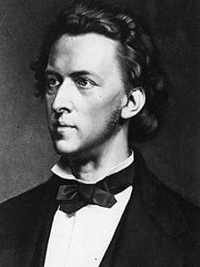

 (Fryderyk Franciszek Chopin; Zelazowa Wola, actual Polonia, 1810 - París, 1849) Compositor y pianista polaco. Si el piano es el instrumento romántico por excelencia se debe en gran parte a la aportación de Frédéric Chopin: en el extremo opuesto del pianismo orquestal de su contemporáneo Liszt (representante de la faceta más extrovertida y apasionada, casi exhibicionista, del Romanticismo), el compositor polaco exploró un estilo intrínsecamente poético, de un lirismo tan refinado como sutil, que aún no ha sido igualado.
Ciertamente son pocos los músicos que, a través de la exploración de los recursos tímbricos y dinámicos del piano, han hecho «cantar» al instrumento con la maestría con qué él lo hizo. Y es que el canto constituía precisamente la base, la esencia, de su estilo como intérprete y como compositor.
Hijo de un maestro francés emigrado a Polonia, Chopin fue un niño prodigio que desde los seis años empezó a frecuentar los grandes salones de la aristocracia y la burguesía polacas, donde suscitó el asombro de los asistentes gracias a su sorprendente talento. De esa época datan también sus primeras incursiones en la composición.
Wojciech Zywny fue su primer maestro, al que siguió Jozef Elsner, director de la Escuela de Música de Varsovia. Sus valiosas enseñanzas proporcionaron una sólida base teórica y técnica al talento del muchacho, quien desde 1829 emprendió su carrera profesional como solista con una serie de conciertos en Viena.
El fracaso de la revolución polaca de 1830 contra el poder ruso provocó su exilio en Francia, donde muy pronto se dio a conocer como pianista y compositor, hasta convertirse en el favorito de los grandes salones parisinos. En ellos conoció a algunos de los mejores compositores de su tiempo, como Berlioz, Rossini, Luigi Cherubini y Vincenzo Bellini, y también, en 1836, a la que había de ser uno de los grandes amores de su vida, la escritora George Sand.
Por su índole novelesca y lo incompatible de los caracteres de uno y otro, su relación se ha prestado a infinidad de interpretaciones. Se separaron en 1847. Para entonces Chopin se hallaba gravemente afectado por la tuberculosis que apenas dos años más tarde lo llevaría a la tumba. En 1848 realizó aún una última gira de conciertos por Inglaterra y Escocia, que se saldó con un extraordinario éxito.
La obra de Chopin.
Excepto los dos juveniles conciertos para piano y alguna otra obra concertante (Fantasía sobre aires polacos Op. 13, Krakowiak Op. 14) o camerística (Sonata para violoncelo y piano), toda la producción de Chopin está dirigida a su instrumento musical, el piano, del que fue un virtuoso incomparable. Sin embargo, su música dista de ser un mero vehículo de lucimiento para este mismo virtuosismo: en sus composiciones hay mucho de la tradición clásica, de Mozart y Beethoven, y también algo de Bach, lo que confiere a sus obras una envergadura técnica y formal que no se encuentra en otros compositores contemporáneos, más afectos a la estética de salón.
La melodía de los operistas italianos, con Bellini en primer lugar, y el folclor de su tierra natal polaca, evidente en sus series de mazurcas y polonesas, son otras influencias que otorgan a su música su peculiar e inimitable fisonomía.
A todo ello hay que añadir la propia personalidad del músico, que si bien en una primera etapa cultivó las formas clásicas (Sonata núm. 1, los dos conciertos para piano), a partir de mediados de la década de 1830 prefirió otras formas más libres y simples, como los impromptus, preludios, fantasías, scherzi y danzas.
Son obras éstas tan brillantes -si no más- como las de sus predecesores John Field y Carl Maria von Weber, pero que no buscan tanto la brillantez en sí misma como la expresión de un ideal secreto; música de salón que sobrepasa los criterios estéticos de un momento histórico determinado. Sus poéticos nocturnos constituyen una excelente prueba de ello: de exquisito refinamiento expresivo, tienen una calidad lírica difícilmente explicable con palabras.
{kind=link}